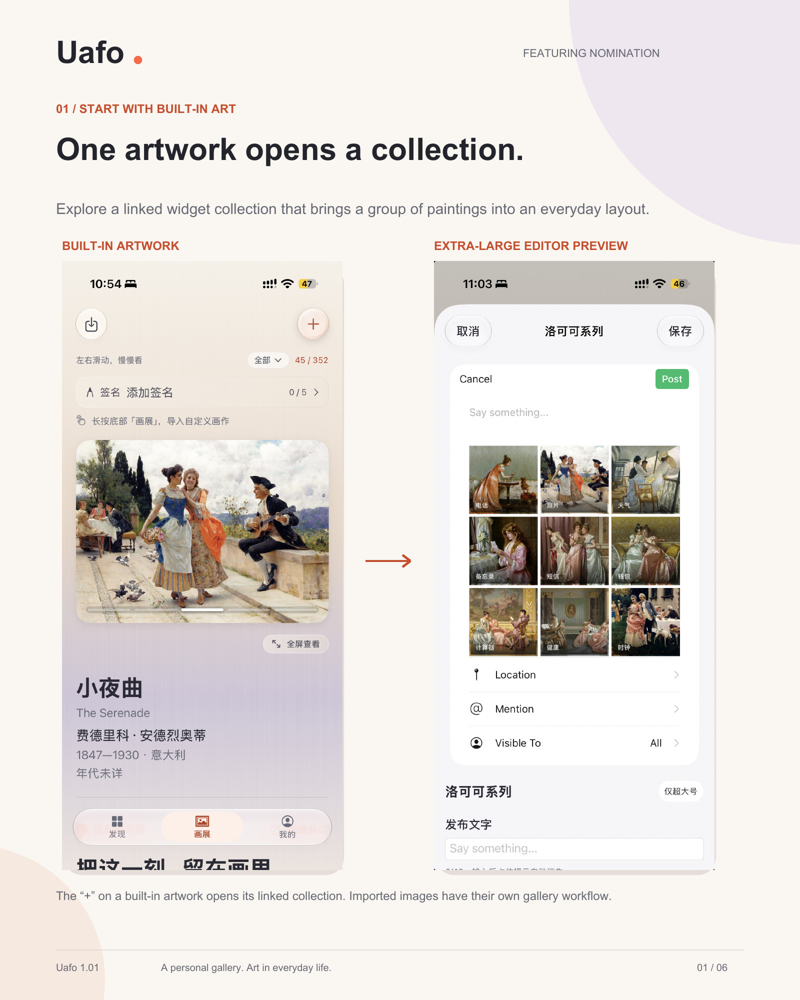
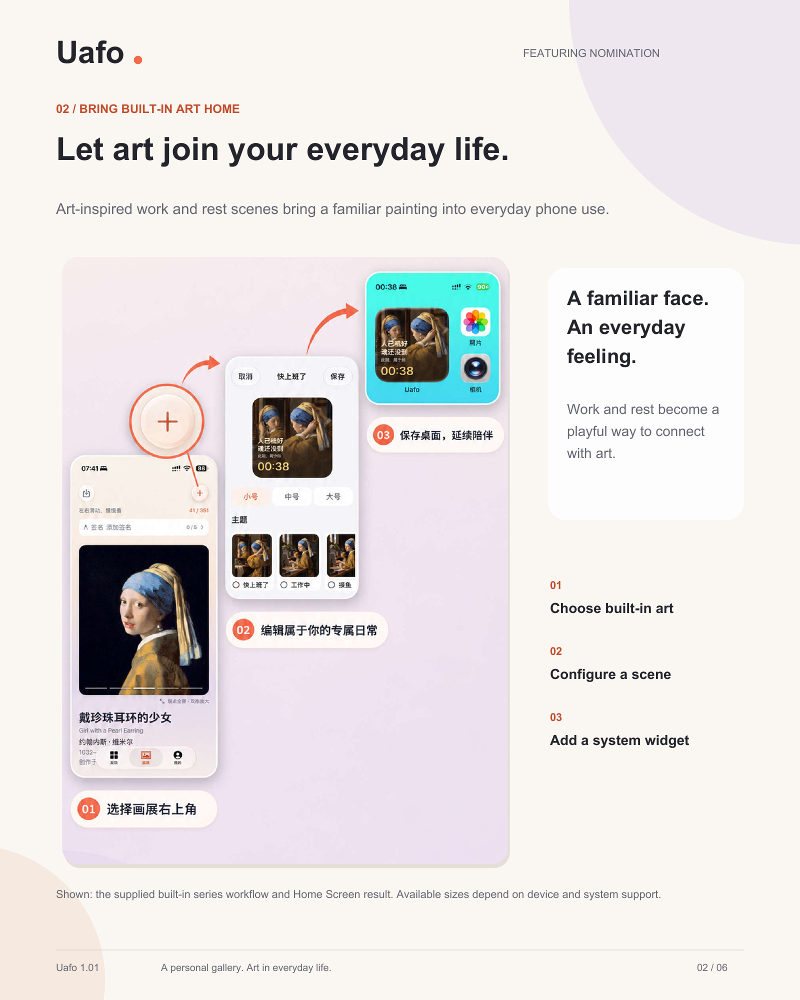
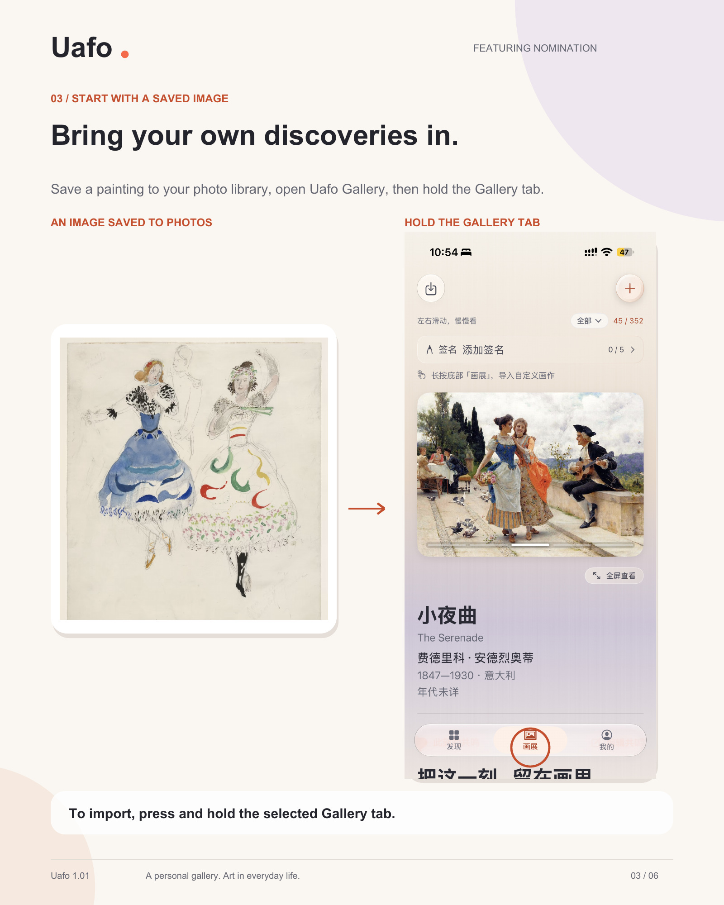
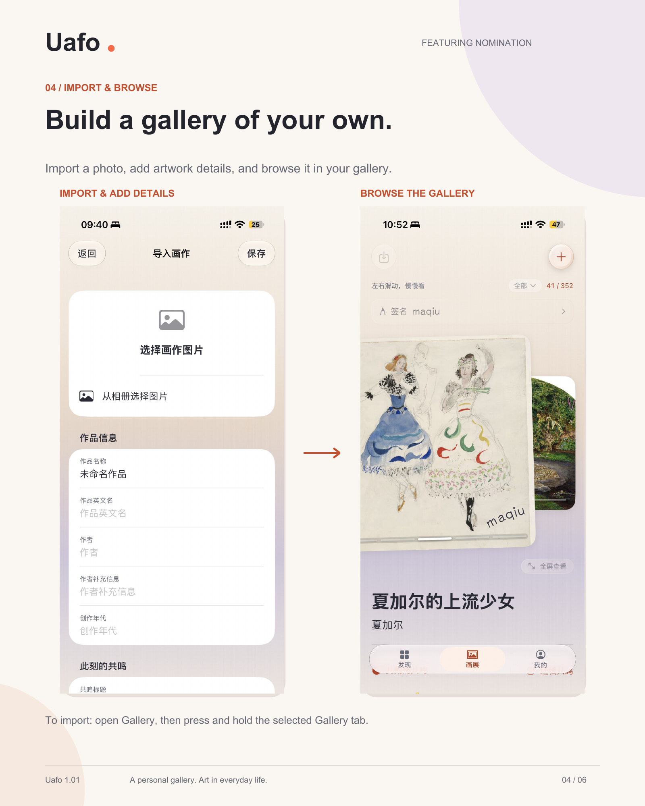
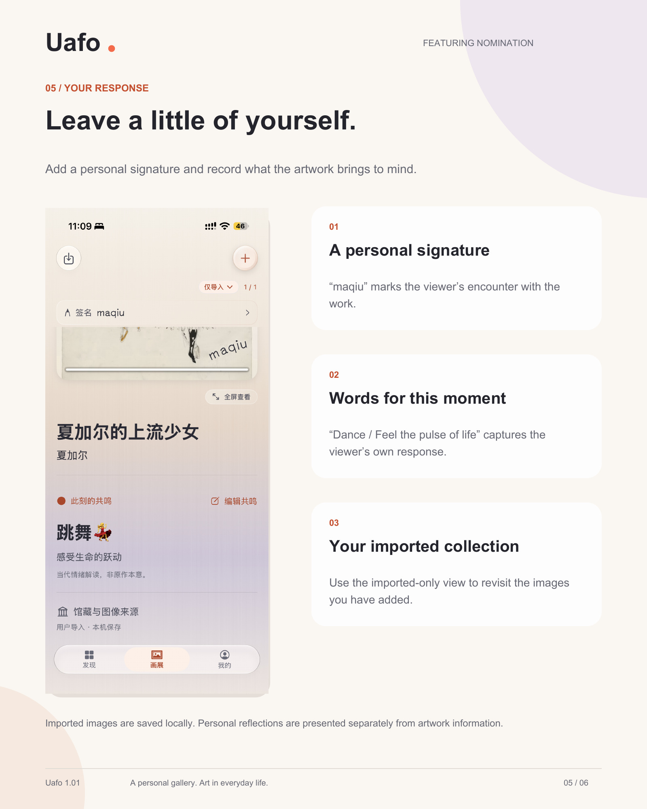
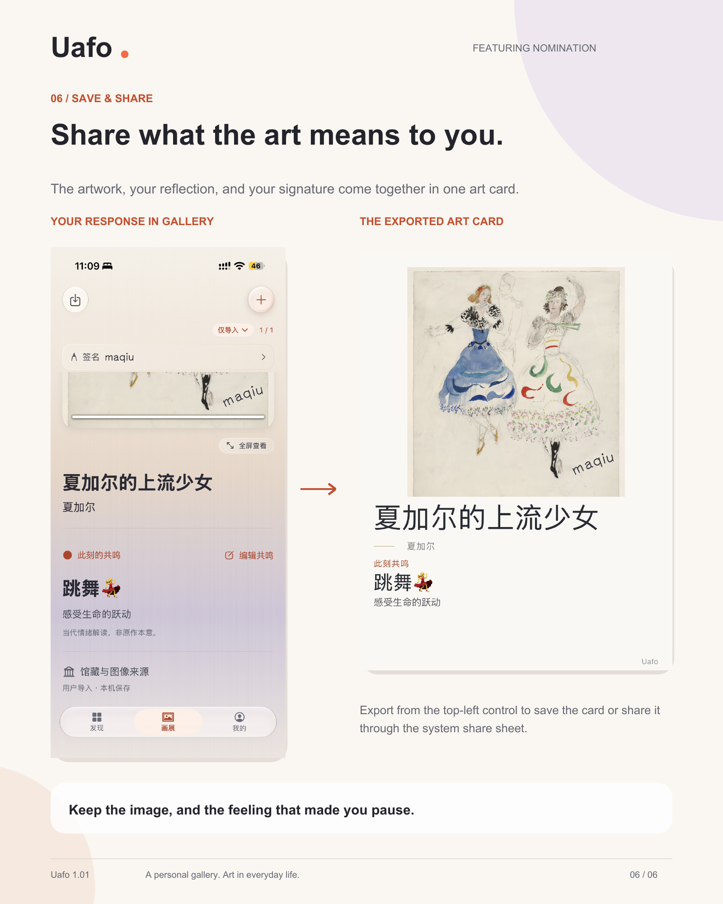

Discover art and linked widgets.
Browse built-in artworks. Use the top-right “+” to edit a linked widget collection, save it, and add it to your Home Screen.
Start with the built-in gallery and bring selected artworks to your Home Screen through linked widgets. Then import your own discoveries from Photos, add a reflection and signature, and share a personal art card.
Browse built-in artworks. Use the top-right “+” to edit a linked widget collection, save it, and add it to your Home Screen.
Save an image to Photos, open Gallery, and hold the selected Gallery tab. Choose the local image and edit its details.
Swipe through your works or filter to imported images. Add a reflection and signature, then export an art card from the top-left control.
Follow the actual sequence: built-in art and widgets, save an image, hold Gallery to import, edit and browse, add your response, and share a card. Select any image to view it at full size.






The website and PDFs follow the same sequence. No account or sign-in is needed.